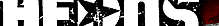
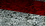
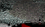
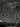
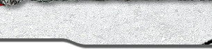

改定2007/03/07
第１条
試合場は、原則として主催者が認定した7.2メートル四方以上の正方形のリングを使用するものとする。
第２条
試合ラウンド数、及びラウンドインターバルについては次のとおりに定める。
第１項
ミドル級の試合は、5分3ラウンドとし、ラウンドインターバルは1分とする。但し、トーナメントは、5分2ラウンドとし、延長ラウンドは5分とする。
第２項
ライトヘビー級の試合は、1R10分、2R5分、延長ラウンドは5分とし、1Rと2Rのラウンドインターバルは2分、2Rと延長ラウンドのインターバルは１分とする。
第３項
上記以外の試合の試合時間、インターバルは主催者によって決定され、主催者は契約の際に選手にこれを伝えるものとする。
第３条
試合着、装具については、次の通りに定める。
第１項
選手は、両手に主催者が用意したオープンフィンガーグローブを着用する。
第２項
試合着は、原則としてスパッツ、トランクス、柔道着、柔術着、サンボ着、レスリングシングレットのいずれかとする。
第３項
選手の選択により、ニーパッド、エルボーパッド、シンガード、テーピング、アンクルサポーターを装着してもよい。
第４項
試合で着用されるコスチュームや装具は、大会前に行われるルールレビューの際に持参し、競技役員の許可を得なければならない。
第５項
大会当日､競技役員は､選手が使用するこれらのものが許諾したものと同一のものであることを確認しなければならない。
第６項
マウスピース、ファウルカップは、選手各人が用意し、必ず着用すること。
第７項
コスチュームとあらゆる装具は、プラスチックや金属などの人体表面よりも硬いと競技役員によって判断される飾りや留め具、ジッパー、ファスナー、バックルならびにポケットがないものを着用すること。
第４条
グローブ、テーピング、バンテージについては次の通りに定める。
第１項
選手は、テーピング、バンテージを使用することができる。
第２項
バンテージは、主催者によって用意されたものを使用しなければならない。
第３項
テーピングなどにねじり合わせるなどの加工を施し使用することはできない。
第４項
選手がテーピングおよびバンテージを巻く際は、選手は競技役員に指定された場所を訪れ、競技役員監視のもとにテーピングおよびバンテージを巻かなければならない。
第５項
テーピングおよびバンテージを施す際は、試合前に必ず競技役員のチェックおよびサインを受けなければならない。
第６項
試合で用いられる公式グローブは、試合の直前に入場ゲートにおいて競技役員より選手に渡され、その場で封印されるものとする。
第７項
試合終了後、選手は競技役員に指定された場所を訪れ、直接競技役員の手によりグローブ・バンテージの開封を受けなくてはならない。
第８項
試合終了後、競技役員により開封されたグローブおよびバンテージはプロモーターに返納しなくてはならない。
第９項
試合終了後にグローブ・バンテージに関する不正が発覚した場合、選手は失格となる。
第５条
レスリングシューズの利用については次の通りに定める。
第１項
大会前に行われるルールレビューにおいて競技役員によるチェックを受け、危険性が無いと承認を得られたシューズのみその着用を認められる。
第２項
ファスナーやジッパーなど硬質な素材の部品が用いられたレスリングシューズの着用は認められない。
第３項
大会当日、競技役員は、これが許諾したものと同一のものであることを確認しなければならない。
第４項
シューズの紐の部分にはテーピングを施すこととする。
第６条
ワセリン、滑り止め等の利用の禁止。
第１項
選手は身体にいかなるもの（オイル、ワセリン、痛み止め、マッサージ用のクリーム、靴底・足裏へ滑り止め等）も試合前の計量より試合終了まで一切塗布してはならない。
第２項
選手は試合当日に整髪料を利用してはならない。
第３項
試合前、または試合中に何らかの物質を身体に塗布していることが確認された場合は、直ちに「警告」が宣告される。さらに、罰金としてファイトマネーの50％が没収される。
第４項
リングドクターが医学的見地から必要と認めた場合に限り、選手の身体に必要量の軟膏等を塗布することは認められるが、選手は試合前にこれを完全に洗い流すものとする。
第５項
試合終了後に選手がなんらかの物質を身体に塗布していたことが明らかとなった場合、選手は失格となる。
第７条
試合の勝敗は以下の結果で決定する。
第１項
一本勝ち
ギブアップ、戦意喪失などの意思表示は、口頭で行うかマットまたは相手の体を3回以上叩いた場合とする。
第２項
ノックアウト（Ｋ．Ｏ）
一方の選手が打撃または投げ技や締め技により失神し､試合の続行が不可能になった場合。
第３項
テクニカルノックアウト（Ｔ．Ｋ．Ｏ）
(a) レフェリーストップ
選手の一方が著しく優勢で、劣勢の選手が危険な状態とレフェリーが判断した場合。
(b) ドクターストップ
相手選手の正当な攻撃を受けて怪我を負った場合、リングドクターが診断し試合続行不可能と判断したとき、その選手は敗者となる。但し、反則攻撃による怪我の場合は、反則を犯したものが敗者となる。なお、リングドクターによるドクターチェックの際は、サブレフェリーがチーフコーナーマンをニュートラルコーナーまで導き、リングドクターの診断および指示を伝達する。診断の結果、 ドクターストップになった場合は、ストップと判断した診断の内容をサブレフェリーよりチーフコーナーマンに説明をする。
(c) 試合放棄
試合進行中、セコンドがタオルをリングに投入した場合。なお、レフェリーがこれに気付かない場合には、ジャッジが試合終了の合図をさせることができる。
第４項
判定
判定は、3名のジャッジにより、以下の判定基準に基づき行うものとし、2名以上のジャッジに優勢と評価された選手が勝者となる。（重要度はリストの順番に準ずるものとする）
(a) ダメージ
(b) コントロール
(c) アグレッシブネス
(d) ウェイト
これらをトータルに評価し、各ラウンド10点からの減点方式で採点するものとする。
最終ラウンド終了時に両者の評価が同点となった場合は、試合全体の流れを考慮し、どちらの選手が優勢であったかを判断するものとする。また、反則による減点で両者の評価が同点となった場合は、本来の点数が高く評価された選手を優勢とする。
第５項
失格
なんらかの理由で試合前、試合中および試合後に選手が失格となった場合、試合の内容に関らずその対戦相手を勝者とし公式記録に記録する。なお、失格に関する詳細は第19条を参照のこと｡
第６項
ダブルノックアウト
両選手が互いに正当な攻撃により同時に試合続行不可能な状態に陥った場合、これを「ダブルノックアウト」と定め、公式記録は引き分けとする。また、ここで言う「同時」とは一つの攻防を意味するもので、必ずしも同一の瞬間である必要は無いものとする。
第７項
ノーコンテスト（無効試合）
選手双方がルール違反を犯した場合、偶発性の事故により審判員および主催者が試合続行不可能と判断した場合、または、1ラウンド中に偶発性の事故により一方もしくは双方の選手が試合を続行できなくなった場合、その試合は「ノーコンテスト」となる。
なお、トーナメント戦において１ラウンド中にこれらの事故が起こった場合は、試合の継続が可能な選手を勝者と同等に扱うものとする。但し、2ラウンド以降に偶発性の事故により一方もしくは双方の選手が試合を続行できなくなった場合は、事故が起こるまでの判定により試合を決するものとする。
なお、トーナメント戦において、勝者を決することが出来ない、または勝者が次の試合を行うことが出来ない場合は、第17条にのっとりリザーブ権を獲得した選手に次の試合を行う権利が与えられる。
第８条
以下の行為を反則とする。
反則を犯した選手は、レフェリーに「警告」を宣告され、判定の減点材料となり、警告4回で失格となる。但し、悪質な反則をした場合や故意に反則を繰り返す場合は、レフェリーの判断によりレッドカードを提示し、即失格とすることもできる。なお、警告1回につき罰金としてファイトマネーの10％が没収される。
1. 噛み付き
2. 目、鼻、口など、粘膜部への攻撃
3. 頭突き
4. 金的行為
5. 頭髪、耳、鼻などを引っ張る行為
6. 気管を押しつぶす、のどをつかむなど、手指でののどへ対する直接的な攻撃
7. 後頭部、延髄、脊髄への打撃攻撃（後頭部とは、頭の真後ろのことをいい、側面、耳の周りを後頭部とはみなさない）
8. 頭部・顔面への肘打ちおよび前腕部分による打撃
9. スタンドポジション状態の選手によるグラウンドポジション状態の選手への顔面、頭部への蹴り （但し、双方がグラウンド状態での攻防については、顔面、頭部への蹴り技は有効とする）
10. ４点ポジション等を含むあらゆるグランドポジション状態の選手の顔面・頭部への膝蹴り
11. 3本以下の指を掴むなど、指への攻撃
12. 柔道着、柔術着、サンボ着以外の試合着、装具を掴む行為（グローブ、スパッツ、サポーターなど）
13. 胴着を着用した相手に対し、その胴着を“正常に着用されていない状態”にしようとする行為
14. 正常に着用されているとみなされない状態の胴着を用いた攻撃
15. 帯を用いた攻撃
16. 故意にロープおよびコーナーポストを掴む行為、ロープに腕や脚などの肢体部分を引っ掛ける行為、またはロープおよびコーナーポストに胴着を引っ掛けるあるいは巻きつける行為
17. リング外へ逃げる
18. 相手をリング外へ投げる
19. 試合中、相手に対しダメージを与えると認められない無気力な攻撃および膠着を誘発する動き
20. プロ選手として常識外の行為
これらの反則行為により選手がダメージを負った場合、または選手の位置関係に大きな影響が見られた場合は、レフェリーは必要に応じて試合をストップし、反則を宣告した後、反則行為が行われた直前の状態から試合を再開するものとする。また、反則行為が攻防の流れに大きな影響を及ぼさないとレフェリーが判断した場合は、試合は継続状態のまま反則の宣告が行われるものとする。
第９条
反則によるダメージの回復については次の通りに定める。
第１項
反則攻撃により反則を受けた選手が甚大なダメージを負った場合、レフェリーとリングドクターの判断により、十分に回復を待って試合を再開することができる。
第２項
第7条第3項に準じ、リングドクターが試合続行不可能と判断した場合は、反則攻撃を行った選手を失格とする。
第３項
レフリーは必要に応じて試合をスタンド状態から再開させる権限を有する｡
第１０条
「ストップ・ドント・ムーブ」については次の通りに定める。
第１項
試合中、選手がリングから落ちそうになった場合、あるいは選手の攻防をロープ・コーナーポストが妨げている状態になった場合、レフェリーは「ストップ・ドント・ムーブ」を宣告し、両者を移動させた後同じ体勢から試合を再開する。
第２項
体勢の再現が不可能な場合や選手がリングから落ちてしまった場合は、スタンドからの再開とする。
第１１条
試合着の破損等については次の通りに定める。
第１項
試合着が攻防中に著しく乱れたり破損した場合、レフェリーは試合をストップし、選手に試合着を正すように命じ、選手はこれに従わなければならない。
第２項
試合着が破損した場合に限り、試合がストップした状態であればそれがラウンド中、インターバル中のいずれかに関わらず必要に応じ、認められた試合着への交換が許されるものとする。
第３項
試合着が破損し、かつ選手が適切な予備の試合着を準備していなかった場合、選手は競技役員が提供する試合着を着用するものとする。
第１２条
膠着とブレイクについては次の通りに定める。
第１項
レフェリー、ジャッジが両選手間に有効な攻防が見られないと判断した場合は、選手に有効な攻防をするように口頭で注意を促すものとする。
第２項
5秒から10秒を目安に改善が見られない場合、両選手をブレイクし、スタンドから試合を再開させるものとする。
第１３条
判定、裁定への抗議の申し立てについては次の通りに定める。
第１項
選手およびコーナーマンは、審判員の判定および指示に従わなければならない。万が一その判定等に意義を申し立てる場合は、試合終了後2週間以内に書面にてプロモーターに提出することができる。
第２項
選手およびコーナーマン以外の第三者は、審判員の判定に一切介入してはならない。
第３項
上記の条項が遵守されない場合、罰金としてファイトマネーの10％が没収される。
第１４条
コーナーマンについては次の通りに定める。
第１項
選手は、チーフコーナーマン1名と2名のセコンド、合計3名までをコーナーマンとしてリングサイドに待機させることができる。
第２項
3名のコーナーマンは、事前に登録されている者でなければならない。
第３項
コーナーマンは、試合中は自コーナーの指定された場所を離れてはならない。
第４項
コーナーマンは、ラウンド中のいかなる状況においても選手およびレフェリーに直接接触してはならない。
第５項
ラウンドインターバルにおいて、リング内に立ち入ることのできるコーナーマンは１名のみとする。
第６項
上記の条項にコーナーマンが違反した場合は、罰金としてファイトマネーの10％が没収される。
第１５条
試合前、試合後の検査については次の通りに定める。
第１項
選手は、試合前に必ずリングドクターによるメディカルチェックを受けなければならない。
第２項
競技役員は必要に応じて選手の体表面の油分などを希釈したエタノールで拭き取る権限を持つものとする。
第３項
選手が計量時に契約体重をオーバーしていた場合、それが1kg未満であれば「警告」と減点が与えられ、罰金としてファイトマネーの30％が没収される。また、オーバーした体重が1kg以上の場合、その選手は失格となる。
第４項
主催者からの要請があった場合には、いかなる場合であれ、ドーピングチェックを受ける義務がある。
第５項
検査の結果、薬物反応が出た場合は失格となる。
第１６条
リングドクターは試合中に最低限の止血を選手に施すことができるものとする。
第１項
リングドクターは試合中に最低限の止血を選手に施すことができるものとする。
第２項
リングドクター医学的な理由に基づきレフリーに試合を止めさせる権限を持つ。
第１７条
審議委員について次の通りに定める。
第１項
選手の安全性、競技の公平性を向上させるために審議委員は審判団の裁定に対して異議を申し立てることができる。
第２項
審議委員より異議の申し立てがあった場合、審判団は２週間以内に公式見解または改善案を書面で公開するものとする。
第１８条
トーナメント戦におけるリザーブ権は次の通りに定めるものとする。
第１項
トーナメント本戦で敗北した選手、またはトーナメント本戦で引き分けとなった選手にはリザーバーとしての権利が与えられる。ただし以下の場合はリザーバーとしての権利は与えられない。
(a) 打撃によりKO負けを喫した場合。
(b) カット、その他の負傷によりドクターストップ負けを喫した場合。
(c) セコンドのタオル投入による試合放棄をした場合。
(d) 反則行為の累積により失格負けをした場合。
(e) リングドクターが負傷などの理由でその選手を適格とみなさない場合。
第２項
リザーブファイトに勝利した選手、またはリザーブファイトで引き分けとなった選手にはリザーバーとしての権利が与えられる。ただし以下の場合はリザーバーとしての権利は与えられない。
(a) リングドクターが負傷などの理由でその選手を適格とみなさない場合。
第３項
リザーバー権の優先順位は以下の順位とする。（リスト上位ほど高い優先順位をとする。）
(a) 棄権した選手と対戦した敗者。
(b) リザーブファイトの勝者。
(c) 棄権した選手と異なるブロック、異なる試合順の試合の敗者。
（ex. Aブロック第1試合のリザーバーはBブロック第2試合の敗者。）
(d) 棄権した選手と異なるブロック、同じ試合順の試合の敗者。
（ex. Aブロック第1試合のリザーバーはBブロック第1試合の敗者。）
(e) 棄権した選手と同じブロック、異なる試合順の試合の敗者。
（ex. Aブロック第1試合のリザーバーはAブロック第2試合の敗者。）
リザーブ権を持つ選手を上記の優先順位に基づきリザーバーとして棄権選手の代役として起用する。
ただしいずれの選手も何らかの理由でリザーバーとして適格とみなされなかった場合に限り、棄権した選手と対戦を予定していた選手は不戦勝となる。
第１９条
失格について以下のように定める。
第１項
試合前、試合中および試合後に選手が失格となった場合、試合の内容に関らずその対戦相手を勝者とし公式記録に記録する。
第２項
選手が失格した場合、ファイトマネーの全額(100%)を罰金として没収される｡
第３項
選手が試合後に失格した場合、その試合で獲得したタイトル、賞金は没収される｡
第４項
第9条第2項（過失による反則行為）により失格なった選手を３ヶ月以上の出場停止処分とする。
第５項
第8条（反則行為の累積と悪質な反則）により失格となった選手を６ヶ月以上の出場停止処分とする。
第６項
第4条（グローブ・バンテージに関する規定）、第6条（ワセリンなどの塗布物に関する規定）、第15条第3項（契約体重に関する規定）および第15条第4項及び第5項（ドーピングに関する規定）に反し失格となった選手を６ヶ月以上の出場停止処分とする。
第２０条
本大会規定に定められていない問題が生じた場合、プロモーターならびに審判員の合議によって、これを処理するものとする。
補足１
足裏以外の身体部位が継続的にマットについている状態をグラウンドポジション状態と定める。
補足２
以下の状態を胴着等を“正常に着用された状態”であるとみなすように定める。
上 着
両袖内に両腕が完全に通り、前後の位置関係が本来の想定通りの状態。
ズボン
腰の位置が正しく、かつ両裾から両足がでている状態。
帯
腰の周りで2周以上巻かれ、結び目がほどけていない状態。
Copyright (C) 2007 HERO-S Mail to:
official@hero-s.com
Copyright (C) 2007 G.T.Entertainment, Inc. All Rights Reserved.
当サイトで使用している写真およびテキストの無断転載を禁止します。